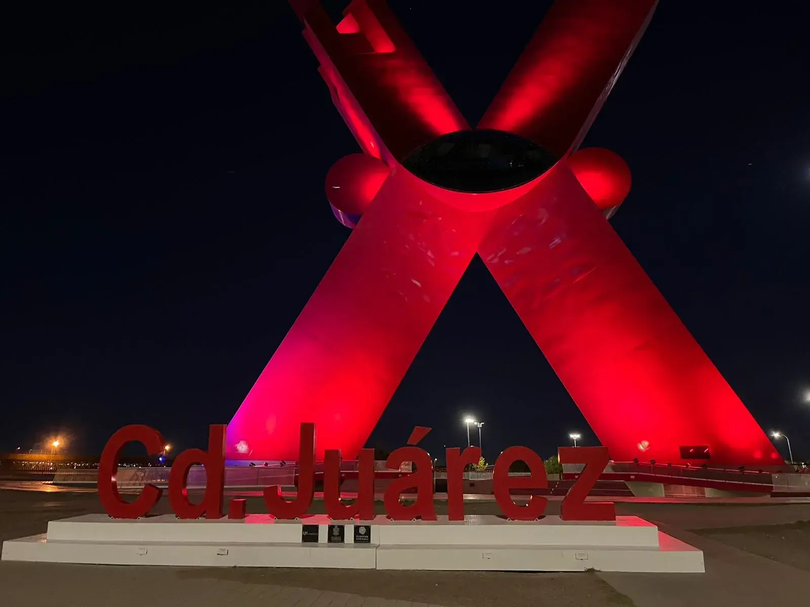
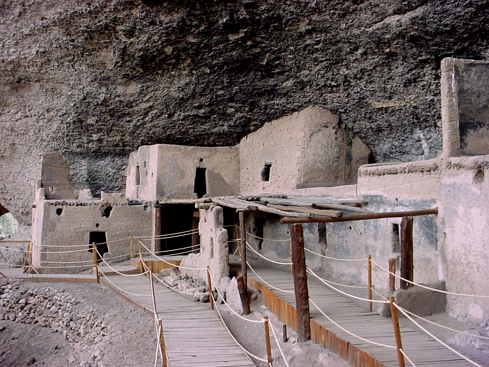
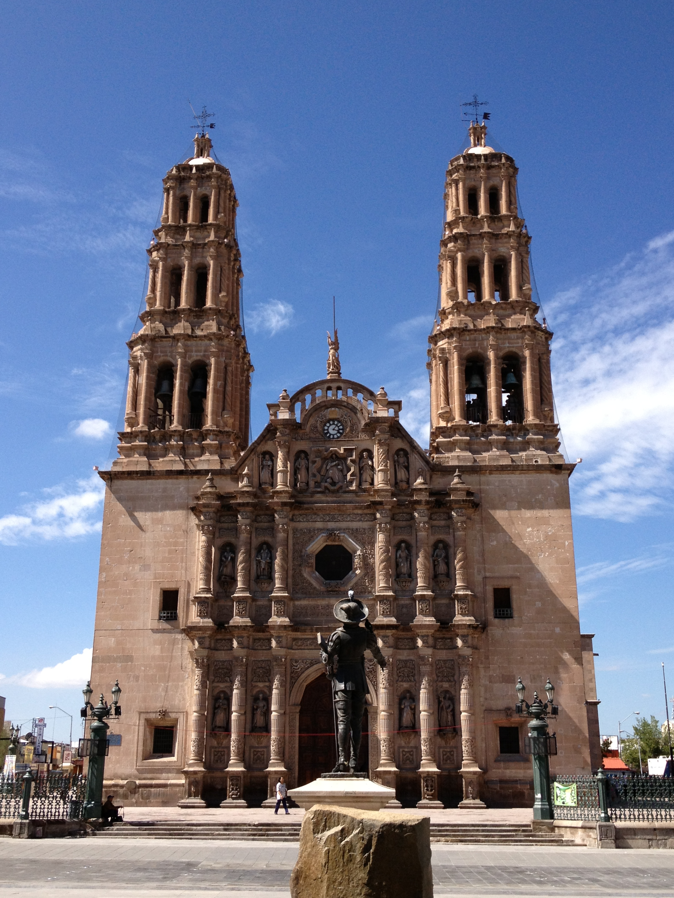
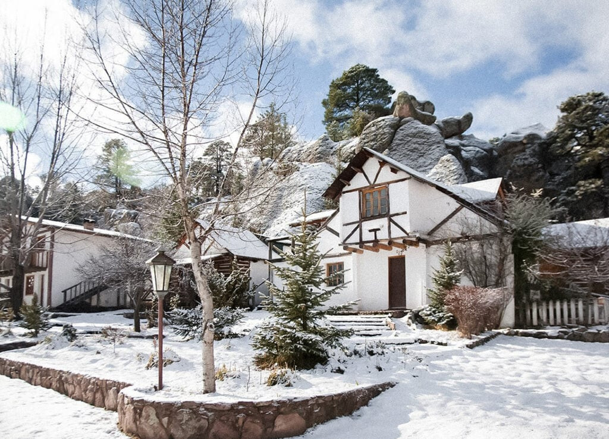
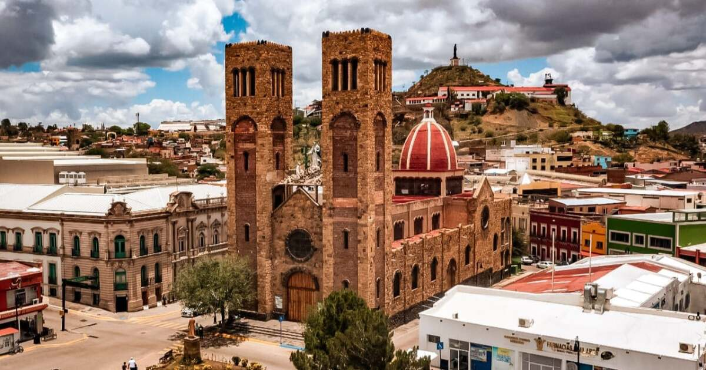

Ciudad Juárez
Región Norte | FronteraConocida históricamente como el "Paso del Norte", Juárez es el motor industrial del estado y una ciudad de resiliencia. Es la cuna del Burrito y el lugar donde la cultura mexicana se mezcla con la estadounidense de forma única.
Clima
Desértico extremoso. Veranos de 40°C e inviernos que pueden llegar a los -5°C.
Historia
Fue sede del gobierno de Benito Juárez durante la intervención francesa.
- Dunas de Samalayuca: Un mar de arena fina ideal para sandboarding y fotos de película.
- Misión de Guadalupe: La construcción más antigua de la ciudad (1659).
- Museo de la Revolución (MUREF): Donde se firmaron los tratados de paz de la Revolución.

Paquimé (Casas Grandes)
Región Noroeste | ArqueologíaPatrimonio de la Humanidad por la UNESCO. Paquimé fue el centro comercial más importante del norte de América entre los años 900 y 1300 d.C. Sus edificios de adobe de varios pisos muestran un sistema hidráulico avanzado para su época.
Artesanía
Famoso mundialmente por la cerámica de Mata Ortiz, inspirada en los diseños antiguos.
- Museo de las Culturas del Norte: Una joya arquitectónica que alberga tesoros prehispánicos.
- Cueva de la Olla: Un sitio arqueológico cercano con un granero gigante de barro.
- Mata Ortiz: Visita los talleres de los maestros alfareros.

Chihuahua Capital
Región Centro | Capital EscénicaUna de las ciudades con mejor calidad de vida en México. Su centro histórico es un museo al aire libre con edificios de cantera rosa. Es el lugar ideal para degustar un buen corte de carne y conocer la leyenda de "La Pascualita".
- Palacio de Gobierno: Contiene murales impresionantes que narran la historia del estado.
- Quinta Gameros: Una de las mansiones más bellas de México con estilo Art Nouveau.
- Grutas de Nombre de Dios: Formaciones geológicas espectaculares bajo la ciudad.

Creel
Sierra Tarahumara | Pueblo MágicoA 2,330 metros sobre el nivel del mar, Creel es el refugio de la cultura Rarámuri. Es el punto de partida para adentrarse en las Barrancas del Cobre. El aroma a pino y el clima fresco lo hacen un destino inolvidable, especialmente en invierno cuando se cubre de nieve.
- Valles de los Monjes, Ranas y Hongos: Gigantescas rocas erosionadas con formas caprichosas.
- Lago de Arareko: Un espejo de agua rodeado de bosque de coníferas.
- Cascada de Cusárare: Una caída de agua de 30 metros en medio del bosque.

Hidalgo del Parral
Región Sur | Capital del MundoFamosa por su pasado minero de plata. Es conocida como "La Capital del Mundo" (título dado por el Rey Felipe IV). Aquí fue emboscado y asesinado el general Francisco Villa, por lo que su figura es central en la identidad del pueblo.
- Museo Francisco Villa: Ubicado en el lugar exacto de su muerte.
- Mina La Prieta: Recorrido por las profundidades de la mina que dio origen a la ciudad.
- Dulces Regionales: No te vayas sin probar las famosas "rayadas" y dulces de leche.